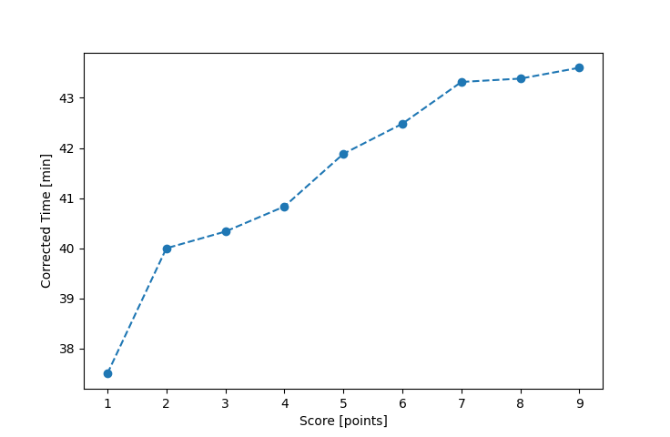

| Wind: | 2-3 (BFT) |
|---|---|
| RC: | Ron_FDavid_Bu |
| Date: | July 09, 2017 |
| Notes: | M2 180 Port Rounding |
| Rank / Score | Name | Boat | Input Time [mm:ss] | Input Offset [mm:ss] | Race Time [mm:ss] | Race Time [s] | Handicap | Corrected Time [s] | Corrected Time [mm:ss] |
|---|---|---|---|---|---|---|---|---|---|
| 1.0 | Art_M | SWSX | 35:58 | 00:00 | 35:58 | 2158 | 0.95900 | 2250 | 37:30 |
| 2.0 | Rod_H | LASEM | 38:55 | 00:00 | 38:55 | 2335 | 0.97300 | 2400 | 40:00 |
| 3.0 | Mike_F | SF | 40:30 | 00:00 | 40:30 | 2430 | 1.00400 | 2420 | 40:20 |
| 4.0 | Chris_E | SF | 41:00 | 00:00 | 41:00 | 2460 | 1.00400 | 2450 | 40:50 |
| 5.0 | Xavier | SWSX | 40:10 | 00:00 | 40:10 | 2410 | 0.95900 | 2513 | 41:53 |
| 6.0 | Barry_O | HLR14 | 47:27 | 00:00 | 47:27 | 2847 | 1.11700 | 2549 | 42:29 |
| 7.0 | Nedra_F | SF | 43:29 | 00:00 | 43:29 | 2609 | 1.00400 | 2599 | 43:19 |
| 8.0 | Mike_S | FSCT | 39:13 | 00:00 | 39:13 | 2353 | 0.90400 | 2603 | 43:23 |
| 9.0 | Lewis_V | BCN | 37:56 | 00:00 | 37:56 | 2276 | 0.87000 | 2616 | 43:36 |

Application Notes:
All race results are unofficial
View source code at https://github.com/cessnao3/portsmouthracecalc/